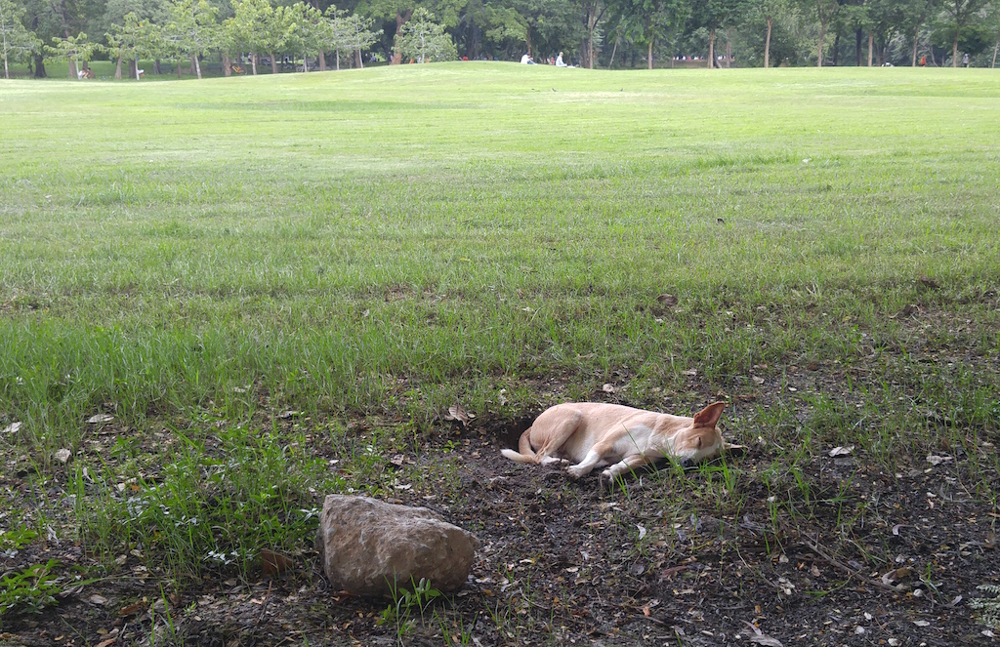

เราสามารถมองไปบนท้องฟ้ากว้างใหญ่ได้
เรามองเห็นเมฆลอยล่องได้
เรารับรู้และเริงรื่นหรือหลบร้อนลมที่พัดมาได้
เรามีสิทธิมองความสวยงามของต้นไม้ได้
ราก ลำต้น กิ่ง ใบ ดอกไม้
เรามีสิทธิแม้กระทั่งสูดอากาศสดชื่นใต้ร่มเงานั้น
เราเลือกที่จะเล่นหรือหลบน้ำฝนก็ได้
เราเลือกที่ย่ำโคลนหรือเดินเลี่ยงไปก็ได้
เรามองตากับเด็กน้อยน่ารักวัยกำลังซนนั้นได้
เราส่งยิ้มหรือแลบลิ้นใส่เธอก็ได้
เราแอบนั่งมองเจ้ากระรอกเล่นดินตรงนั้นก็ได้
เราถ่ายรูปเจ้าหมาขี้เซาหลับฝันกลางวันก็ได้
ในสวนสาธารณะ
เราทำได้หลายอย่าง
เราปั่นจักรยาน วิ่ง เดิน หรืออยู่นิ่งๆ ก็ได้
แต่เราไม่สามารถมองตาสาวน่ารัก
ที่มีเจ้าของแล้ว อันนั้นทำไม่ได้
ลมเย็นๆ พัดมา
เม็ดฝนเริ่มโปรยมาอีกครั้งแล้วมั้ง